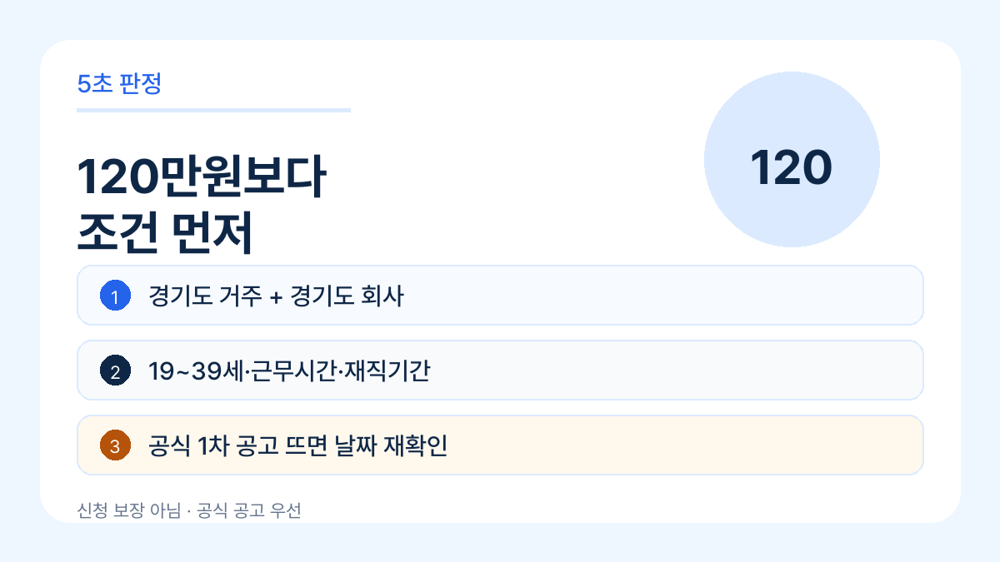
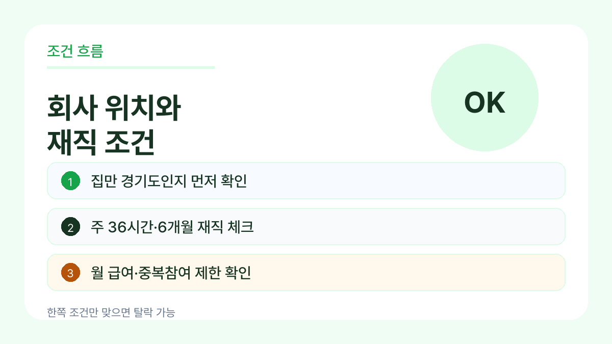
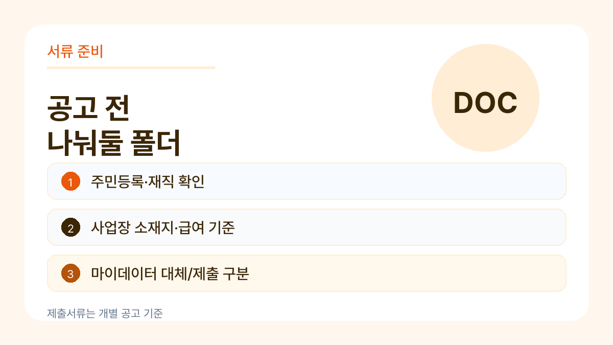

<style>.mf-post{max-width:740px;margin:0 auto;color:#222;font-family:-apple-system,BlinkMacSystemFont,"Apple SD Gothic Neo",Pretendard,sans-serif}.mf-post p{margin:0 0 18px;line-height:2.05}.mf-post h1{font-size:32px;line-height:1.35;margin:24px 0}.mf-post h2{font-size:24px;margin:46px 0 16px}.mf-post figure{margin:22px 0 20px}.mf-post img{max-width:100%;height:auto;display:block;border-radius:18px}.mf-post figcaption{text-align:center;color:#555;font-size:14px;line-height:1.65;margin:7px 0 0}.mf-post li{margin:7px 0;line-height:1.9}.mf-post blockquote{border-left:4px solid #2563eb;background:#f8fafc;margin:24px 0;padding:14px 18px}.mf-post blockquote p{margin:0;line-height:1.8}</style><article class="mf-post"><h1>경기도 청년 복지포인트 6월 신청, 120만원보다 먼저 볼 조건</h1>
<p>경기도 청년 복지포인트는 제목만 보면 “120만원 받을 수 있나?”가 먼저 보입니다.</p>
<p>그런데 실제로는 금액보다 <strong>회사 위치, 재직기간, 주 근무시간, 월 급여 기준</strong>에서 먼저 갈립니다. 여기서 하나라도 안 맞으면 서류를 다 챙겨도 헛걸음이 될 수 있습니다.</p>
<blockquote><p>이 글은 2026년 경기도 청년 노동자 지원사업 선발계획과 전년도 1차 모집 공지를 기준으로 정리한 사전 체크 글입니다. 2026년 1차 개별 접수 공고/FAQ가 뜨면 날짜와 제출서류는 그 공고를 우선으로 봐야 합니다.</p></blockquote>
<figure><figcaption>5초 판정 카드</figcaption></figure>
<h2>5초 판정부터 해보면</h2>
<p>아래 네 가지가 먼저입니다.</p>
<ol>
<li>나는 19~39세 범위에 들어가는가?</li>
<li>주민등록상 경기도 거주자인가?</li>
<li>회사나 사업장이 경기도에 있는가?</li>
<li>주 36시간 이상, 6개월 이상 재직 조건을 볼 수 있는가?</li>
</ol>
<p>여기까지 맞아야 그다음에 월 급여, 사업장 유형, 중복 참여 제한을 봅니다.</p>
<p>말하자면 “청년이면 신청”이 아니라 <strong>경기도에서 일하는 청년 노동자 지원사업</strong>에 가깝습니다.</p>
<figure><figcaption>조건 흐름 카드</figcaption></figure>
<h2>많이 빠지는 조건은 회사 쪽입니다</h2>
<p>헷갈리는 지점은 본인 나이보다 회사 쪽입니다.</p>
<p>경기도 밖 회사에 다니는데 집만 경기도인 경우, 반대로 회사는 경기도인데 거주지가 다른 경우처럼 한쪽만 맞는 상황이 생깁니다.</p>
<p>선발계획에는 공통 조건으로 <strong>경기도 거주, 경기도 소재 기업 재직, 월 급여 기준, 주 36시간 이상, 6개월 이상 재직</strong>이 함께 나옵니다. 그래서 신청 전에는 회사 주소와 재직 기준부터 보는 게 안전합니다.</p>
<p>또 비영리법인은 모두 되는 식으로 보면 안 됩니다. 국가, 지방자치단체, 공공기관 등 제외대상이 붙을 수 있어 개별 공고문 확인이 필요합니다.</p>
<h2>120만원보다 먼저 볼 숫자</h2>
<p>금액은 연 120만원으로 알려져 있지만, 실제 신청 판단에서는 아래 숫자가 더 먼저입니다.</p>
<ul>
<li>출생연도 범위</li>
<li>월 급여 기준</li>
<li>주 근무시간</li>
<li>재직기간</li>
<li>모집 차수별 접수기간</li>
</ul>
<p>특히 6개월 재직이나 월 급여 기준은 “대충 비슷한데?”로 넘기기 어렵습니다. 회사 서류와 4대보험/고용 관련 자료에서 확인되는 숫자라서, 신청 전에 캡처나 발급 순서를 정해두는 편이 낫습니다.</p>
<h2>서류는 이렇게 나눠두면 덜 헷갈립니다</h2>
<p>신청 공고가 뜨면 바로 확인할 폴더를 미리 나눠두세요.</p>
<figure><figcaption>서류 체크 카드</figcaption></figure>
<ul>
<li>주민등록 관련 확인 자료</li>
<li>재직 확인 자료</li>
<li>사업장 소재지 확인 자료</li>
<li>급여 또는 건강보험료 관련 확인 자료</li>
<li>공공 마이데이터 동의로 대체되는 서류</li>
<li>중복 참여 제한 확인용 메모</li>
</ul>
<p>공공 마이데이터 동의로 줄어드는 서류가 있을 수 있지만, 모든 자료가 자동으로 해결된다고 보면 안 됩니다. 공고문에서 “제출 필요”와 “동의 시 생략 가능”을 나눠 보는 게 핵심입니다.</p>
<h2>공식 공고에서 봐야 할 문장</h2>
<p>공식 공고가 올라오면 제목보다 아래 문장을 먼저 찾으세요.</p>
<ul>
<li>모집대상</li>
<li>신청기간</li>
<li>지원내용</li>
<li>제외대상</li>
<li>중복참여 제한</li>
<li>제출서류</li>
<li>선정기준</li>
</ul>
<p>블로그 글에서 날짜만 보고 움직이면 위험합니다. 같은 사업도 차수별로 기간, 인원, 서류 안내가 달라질 수 있습니다.</p>
<h2>지금 기준 정리</h2>
<p>지금 할 일은 신청 버튼을 찾는 것보다 조건을 먼저 걸러보는 겁니다.</p>
<p>경기도 거주, 경기도 소재 기업 재직, 19~39세, 주 36시간 이상, 6개월 이상 재직, 월 급여 기준. 이 여섯 가지를 먼저 확인하면 공고가 열렸을 때 훨씬 덜 헤맵니다.</p>
<p>공식 접수 공고가 열리면 날짜와 서류는 그 공고 기준으로 다시 확인하세요. 이 글은 신청 대행이나 선정 보장이 아니라, 신청 전에 빠지기 쉬운 조건을 줄이는 용도입니다.</p>
<h2>공식 확인</h2>
<ul>
<li>경기도청 고시·공고: 2026년 청년 노동자 지원사업 선발계획 공고 확인</li>
<li>경기도뉴스포털: 전년도 청년 복지포인트 1차 모집 보도자료</li>
<li>청년 노동자 지원사업 접수 사이트: 접수 공고와 FAQ 확인</li>
</ul></article>